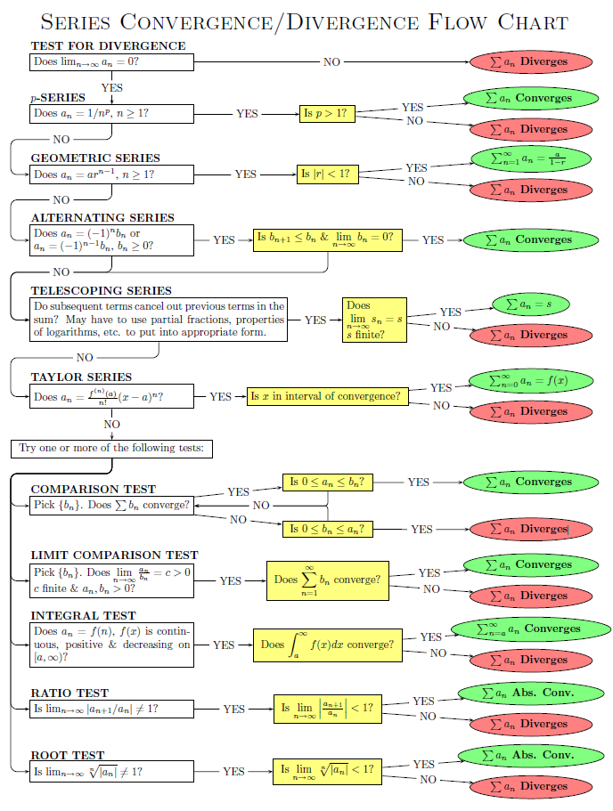
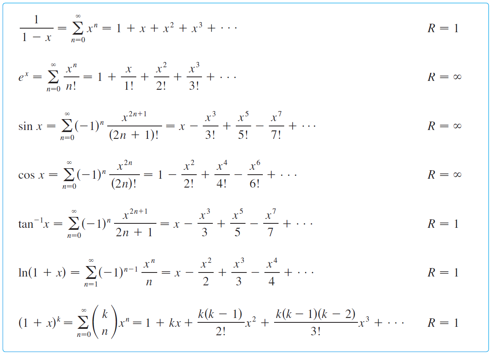

Let $f(x)$ be a continuous (or piecewise continuous) function defined over $[a,b]$.
We partition $[a,b]$ into $n$ intervals such that each interval has has width $\Delta x=\frac{b-a}{n}$ with partition points $x_k=a+k\Delta x$, $0\leq k\leq n$. Note that the endpoints are $x_0=a$ and $x_n=b$.
For each interval $I_k=[x_{k-1}, x_k]$, $1\leq k\leq n$, pick a sample point $x_k^*\in I_k$. This sample point can be the left endpoint ($x_{k-1}$), the right endpoint ($x_k$) or midpoint.
Let $f(x)$ be continuous on $[a,b]$.
Given the function $$g(x)=\int_a^x f(t)dt,\quad a\leq x\leq b$$
Then $g(x)$ is continuous on $[a,b]$ and $$g'(x)=f(x),\quad a\leq x\leq b$$
Fundamental Theorem of Calculus 2
Let $F(x)$ be any antiderivative of $f(x)$, then $$\int_a^b f(x)dx = F(b) - F(a)$$
Taking the limit as $n\to\infty$,
$$\begin{align*}
\overline{f(x)}&=\frac{1}{b-a}\lim_{n\to\infty}\sum_{k=1}^nf(x_k^*)\Delta x\\
&=\frac{1}{b-a}\int_a^b f(x)dx\\
\end{align*}$$
Trigonometric Functions
Strategy for Evaluating $\int \sin^mx\ \cos^nx\ dx$
If power of cosine is odd, $n=2k+1$, save one cosine and use $\cos^2x=1-\sin^2x$ to get
$$\int \sin^mx\ \cos^{2k+1}x\ dx=\int \sin^mx(1-\sin^2x)^k\cos x\ dx$$
Then, subsitute $u=\sin x$.
If power of sine is odd, similar process as above.
If both powers are even, use double angle identities:
$$\sin^2x=\frac{1}{2}(1-cos2x)\quad\quad\cos^2x=\frac{1}{2}(1+cos2x)\quad\quad\sin x\cos x=\frac{1}{2}\sin 2x$$
Strategy for Evaluating $\int \tan^mx\ \sec^nx\ dx$
If power of secant is even, $n=2k, k\geq 2$, save one $\sec^2x$ and use $\sec^2x=1+\tan^2x$ to get
$$\int \tan^mx\ \sec^{2k}x\ dx=\int \tan^mx(1+\tan^2x)^{k-1}\sec^2 x\ dx$$
Then, subsitute $u=\tan x$.
If power of tangent is odd, $m=2k+1$, save one $\sec x\tan x$ and use $\tan^2x=\sec^2x-1$ to get
$$\int \tan^{2k+1}x\ \sec^nx\ dx=\int (\sec^2x-1)^k\sec^{n-1}x\sec x\tan x\ dx$$
Then, subsitute $u=\sec x$.
Trigonometric Substitution
This technique is used when you find:
$$\sqrt{A-x^2}\quad\quad\sqrt{A+x^2}\quad\quad\sqrt{x^2-A}$$
We use the following trig id's:
$$\sin^2x+\cos^2x=1\quad\quad\tan^2x+1=\sec^2x$$
Used to integrate rational functions by expressing it as a sum of simple fractions.
Given a rational function, $\frac{P(x)}{Q(x)}$, if $\deg (P) < \deg (Q)$ then it can be expressed as a partial fraction. If not, perform polynomial division to get $\frac{P(x)}{Q(x)}=S(x)+\frac{R(x)}{Q(x)}$ such that $\deg (R) < \deg (Q)$.
Split the fractions into the form $\frac{A}{ax+b}+\frac{B}{cx+d}$.
e.g. $$\begin{align*}
\int\frac{4x+1}{x^2-x-2}dx&=\int\frac{4x+1}{(x+1)(x-2)}dx\\
&=\int(\frac{3}{x-2}+\frac{1}{x+1}) dx\\
&=3\ln|x-2|+\ln|x+1|+C
\end{align*}$$
Repeated Roots
If a root is repeated $k$ times, we must repeat that term $k$ times such that
$\frac{P(x)}{(ax+b)^k}=\frac{A_1}{ax+b}+\frac{A_2}{(ax+b)^2}+\cdots+\frac{A_k}{(ax+b)^k}$.
Complex Roots
If a function has $Q(x)$ with irreducible quadratic factors, the partial fraction will be of the form $\frac{Ax+B}{ax^2+bx+c}$. Complete the square and use
$$\int\frac{dx}{x^2-a^2}=\frac{1}{a}\tan^{-1}\big(\frac{x}{a}\big)+C$$
$\vec{F}=f(x)\hat{i}$ is conservative if there exists a function $U(x)$ such that $f(x)=-U'(x)$, where $U(x)$ is the potential energy function. So, $U(x)=-\int f(x)dx$. Consequence: If $\vec{F}$ acts on a mass $m$ to move it from $x=a$ to $x=b$, the work done is:
$$\int_a^bf(x)dx=-\int_a^bU'(x)dx=-[U(b)-U(a)]=-\Delta U$$
Alternatively, we can let $x=a$ be a reference point and define $U(x)=-\int_a^xf(s)ds$. We define $U(a)=0$. If $f(x)=-mg$, $U(x)=-\int_a^x-mg\ ds=mgx-mga=mgx$.
Physical Interpretation: $U(x)$ is the work done against the force when $m$ is moved from $a$ to $x$. If $U(x)>0$, we have to work against the force to move $m$ from $a$ to $x$ (i.e. causes a "buildup" of PE).
:
Suppose that a mass $m$ is moving on the $x$-axis under the influence of a conservative force $\vec{F}(x)=f(x)\hat{i}$ according to Newton's Second Law of Motion, $\vec{F}=m\vec{a}$. Then, the total mechanical energy of the mass is constant in time.
:
Total energy $E=KE+PE$. Let $x(t)$ be the trajectory of the mass. Then, $E(t)=\frac{1}{2}mv(t)^2+U(x(t))$ where $U'(x)=-f(x)$.
$$\begin{align*}
E'(t)=\frac{dE}{dt}&=\frac{1}{2}m\frac{d}{dt}v(t)^2+\frac{d}{dt}U(x(t))\\
&=mv(t)v'(t)+U'(x(t))x'(t)\\
&=mv(t)a(t)-f(x(t))v(t)\\
&=v(t)[ma(t)-f(x(t))]\\
&=v(t)[ma(t)-ma(t)]\\
&=0\quad\square
\end{align*}$$
3 Applications of Integration
Centre of Mass
$$\bar{x}=\frac{\sum_{i=0}^nm_ix_i}{\sum_{i=0}^nm_i}$$
Consider an object of length $L$ with a continuous mass distribution, $\rho(x)$, lying on the $x$-axis with one end on the origin.
$$\Delta m\approx\rho(x_k^*)\Delta x$$
$$M=\int_0^L\rho(x)dx$$
$$\bar{x}\approx\frac{\sum_{i=1}^n\Delta m_ix_i^*}{\sum_{i=1}^n\Delta m_i}=\frac{\sum_{i=1}^n\rho(x_i^*)x_i^*\Delta x}{\sum_{i=1}^n\rho(x_i^*)\Delta x}$$
$$\bar{x}=\lim_{n\to\infty}\bigg(\frac{\sum_{i=1}^n\rho(x_i^*)x_i^*\Delta x}{\sum_{i=1}^n\rho(x_i^*)\Delta x}\bigg)=\frac{\int_0^L\rho(x)x dx}{\int_0^L\rho(x)dx}=\frac{1}{M}\int_0^Lx\rho(x)dx$$
Centre of Mass of Centroids
Given $f(x)$ and $g(x)$ where $f(x)>g(x)$ and are continuous over $(a,b)$. Then
$$dA=[f(x)-g(x)]dx$$
First moment w.r.t $y$-axis: $dM_y=xdA$. Net moment w.r.t $y$-axis: $M_y=\int_a^bxdA=\int_a^bx[f(x)-g(x)]dx$
The $x$-coordinate of the Centre of Mass is determimed by
$$\int_a^b(x-\bar{x})dA=0$$
$$\int_a^bx\ dA=\bar{x}\int_a^bdA$$
$$\bar{x}=\frac{\int_a^bx\ dA}{\int_a^bdA}=\frac{M_y}{A}=\frac{\int_a^bx[f(x)-g(x)]dx}{\int_a^b[f(x)-g(x)]dx}$$
Similarly, the $y$-coordinate of the Centre of Mass can be found by:
$$\bar{y}=\frac{M_x}{A}=\frac{\int_a^by\ dA}{\int_a^bdA}$$
Note that $\bar{x}$ can be determined from $y$ and $\bar{y}$ from $x$ by using the midpoint.
$$M_x=\frac{1}{2}\int[f(x)+g(x)]dA$$
Computation of Arclength
Given a function $f(x)$ continuous over $[a,b]$, we want to find its arclength.
Partition into $n$ sub-intervals such that for each sub-interval $[x_{k-1},x_k]$ has an arclength of $C_k\approx||\overrightarrow{P_{k-1}P_k}||=\sqrt{\Delta x^2+\Delta y^2}=\sqrt{\Delta x^2+[f(x_k)-f(x_{k-1})]^2}=\Delta x\sqrt{1+\bigg[\frac{f(x_k)-f(x_{k-1})}{x_k-x_{k-1}}\bigg]^2}$
By the Mean Value Theorem, there exists a $x_k^*\in[x_{k-1},x_k]$ such that $f'(x_k^*)=\frac{f(x_k)-f(x_{k-1})}{x_k-x_{k-1}}$, so $C_k\approx\Delta x\sqrt{1+f'(x_k^*)^2}$
Sum over all intervals.
$$L\approx\sum_{k=1}^nC_k=\sum_{k=1}^n\sqrt{1+f'(x_k^*)^2}\Delta x$$
Take $n\to\infty$.
$$L=\lim_{n\to\infty}\sum_{k=1}^n\sqrt{1+f'(x_k^*)^2}\Delta x=\int\sqrt{1+f'(x)^2}dx$$
Similarly, given a curve $C$, $$L=\int_Cds=\int_C\sqrt{dx^2+dy^2}=\int_Cdx\sqrt{1+\frac{dy}{dx}^2}=\int_a^b\sqrt{1+f'(x)^2}dx$$
Computation of Centroids of Curves
Consider a function $f(x)$ continuous over $[a,b]$. Let $C$ represent the curve with linear density $\rho_0=1$, so $dm=\rho_0ds=ds$.
Moment w.r.t $y$-axis: $dM_y=xds\ \rightarrow\ M_y=\int_CdM_y=\int_Cxds$
Moment w.r.t $x$-axis: $dM_x=yds\ \rightarrow\ M_x=\int_CdM_x=\int_Cyds$
Recall that for centroid($\bar{x},\bar{y}$):
$$\int_C(x-\bar{x})ds=0\quad\text{Net moment w.r.t $\bar{x}$}$$
$$\int_C(y-\bar{y})ds=0\quad\text{Net moment w.r.t $\bar{y}$}$$
So, $$\int_Cxds=\bar{x}\int_Cds\ \rightarrow\ \bar{x}=\frac{\int_Cxds}{\int_Cds}=\frac{\int_Cxds}{L}$$
Similarly, $$\bar{y}=\frac{\int_Cyds}{L}$$
Consider $I_p=\int_1^\infty \frac{1}{x^p}dx,\ p\in\mathbb{R}$. $I_p$ converges for $p>1$ and diverges for $p\leq 1$. This class of integrals is useful for "comparison tests" to determine whether the improper integral converges/diverges.
Comparison Test
Given functions $f(x), g(x)$ such that $f(x)\geq g(x)\geq 0$ for all $x\geq a$, then $\int_a^bf(x)dx\geq\int_a^bg(x)dx$.
If $\int_a^\infty f(x)dx$ converges, then $\int_a^\infty g(x)dx$ converges.
If $\int_a^\infty g(x)dx$ diverges, then $\int_a^\infty f(x)dx$ diverges.
Type II - Discontinuous and (possibly) unbounded at a point $c\in[a,b]$
$f(x)$ is continuous on $[a,b)$ and discontinuous at $b$, then $\int_a^b f(x)dx=\lim_{t\to b^-}\int_a^t f(x)dx$
$f(x)$ is continuous on $(a,b]$ and discontinuous at $a$, then $\int_a^b f(x)dx=\lim_{t\to a^+}\int_t^b f(x)dx$
$f(x)$ is continuous on $[a,b]$ except at $c\in(a,b)$, then $\int_a^b f(x)dx=\lim_{t\to c^-}\int_a^t f(x)dx+\lim_{t\to c^+}\int_t^b f(x)dx$
5 Differential Equations
A differential equation involves derivaties of a function and possibly the function itself.
:
The order of a DE is the order of the highest derivative in the DE.
:
A DE is linear if the dependent variable or derivative is not multiplied by itself or each other (i.e. $y + \frac{dy}{dx}$).
Separable First-Order DEs
:
A DE is separable if it can be written in the form $\frac{dy}{dx}=g(x)f(y)$.
e.g.
$\frac{dy}{dx}=xy\quad\checkmark$
$\frac{dy}{dx}=(x+1)(y^2+1)\quad\checkmark$
$\frac{dy}{dx}=x+y\quad\times$
To solve a separable DE:
Divide by $f(y)$.
$$\frac{1}{f(y)}\frac{dy}{dx}=g(x)\quad *f(y)\neq 0$$
If $f(y^*)=0$, then $y(x)=y^*$ is a constant solution to the DE.
Let $h(y)=\frac{1}{f(y)}$, so $h(y)\frac{dy}{dx}=g(x)$.
Integrate both sides and solve.
$$\int h(y)dy=\int g(x)dx$$
e.g. $\frac{dy}{dx}=xy$
Divide by $y$. $$\frac{1}{y}\frac{dy}{dx}=x\quad\textbf{*Check: } y=0\rightarrow\frac{dy}{dx}=x\cdot 0=0\ \rightarrow y(x)=0\text{ is a solution.}$$
Integrate. $$\int\frac{1}{y}dy=\int xdx$$
Solve.
$$\begin{align*}
\ln|y|&=\frac{1}{2}x^2+C\\
|y|&=e^{\frac{1}{2}x^2+C}\\
y&=\pm e^Ce^{\frac{1}{2}x^2}\\
y&=Ae^{\frac{x^2}{2}}\quad A\neq 0\\
\text{But, $y=0$ is a solution, }y&=Ce^{\frac{1}{2}x^2}\quad , C\in\mathbb{R}
\end{align*}$$
Linear First-Order DE
$$\text{General Form: }\frac{dy}{dx}+P(x)y=Q(x)$$
To solve,
Multiply both sides by the integrating factor, $I(x)=e^{\int P(x)dx}$
$$e^{\int P(x)dx}\frac{dy}{dx}+e^{\int P(x)dx}P(x)y=Q(x)e^{\int P(x)dx}$$
$$\frac{d}{dx}[ye^{\int P(x)dx}]=Q(x)e^{\int P(x)dx}$$
Integrate both sides.
$$ye^{\int P(x)dx}+C=\int Q(x)ye^{\int P(x)dx}dx$$
Solve for y.
$$y(x)=e^{-\int P(x)dx}\int Q(x)ye^{\int P(x)dx}dx-Ce^{-\int P(x)dx}$$
e.g. Solve $\frac{dy}{dx}+2y=x$.
$P(x)=2,\ Q(x)=x,\ I(x)=e^{\int 2dx}=e^{2x}$
Multiply by $I(x)$. $$e^{2x}\frac{dy}{dx}+2ye^{2x}=xe^{2x}$$
$$\frac{d}{dx}[ye^{2x}]=xe^{2x}$$
Solve for y.
$$y=\frac{1}{2}x-\frac{1}{4} +Ce^{-2x}\quad\square$$
e.g. Projectile Motion with Air Resistance
$$m\frac{dv}{dt}=-mg-kv_y\ \rightarrow\ \frac{dv}{dt}=-g-\frac{k}{m}v_y$$
Let's rewrite this in terms of a first-order linear DE.
$$\frac{dv}{dt}+\frac{k}{m}v=-g\quad P(t)=\frac{k}{m},\ Q(t)=-g,\ I(t)=e^{\int \frac{k}{m}dt}=e^{\frac{kt}{m}}$$
We multiply by $I(t)$: $$e^{\frac{kt}{m}}\frac{dv}{dt}+\frac{k}{m}ve^{\frac{kt}{m}}=-ge^{\frac{kt}{m}}$$
$$\frac{d}{dt}[ve^{\frac{kt}{m}}]=-ge^{\frac{kt}{m}}$$
Integrate both sides:
$$ve^{\frac{kt}{m}}+C_1=-\int ge^{\frac{kt}{m}}$$
$$ve^{\frac{kt}{m}}=-\frac{mg}{k}e^{\frac{kt}{m}}+C$$
Solve for v. $$v=-\frac{mg}{k}+Ce^{-\frac{kt}{m}}$$
If we impose initial condition such that $v_y(0)=v_0\sin\theta$,
$v(0)=v_0\sin\theta=-\frac{mg}{k}+Ce^{-\frac{k(0))}{m}}=-\frac{mg}{k}+C$
So, $C=v_0\sin\theta+\frac{mg}{k}$.
$$\therefore v(t)=(v_0\sin\theta+\frac{mg}{k})e^{-\frac{kt}{m}}-\frac{mg}{k}$$
6 Parametric Representations of Curves
i.e. Projectile Motion. These are the parametric representations of the trajectory of a projectile: $$x(t)=(v_0\cos\theta)t\quad y(t)=(v_0\sin\theta)t-\frac{1}{2}gt^2$$
Calculus with Parametric Curves
Tangents
Given $x=f(t)$ and $y=g(t)$,
$$\frac{dy}{dt}=\frac{dy}{dx}\cdot \frac{dx}{dt}$$
So, $$\frac{dy}{dx}=\frac{\frac{dy}{dt}}{\frac{dx}{dt}}\quad\frac{dx}{dt}\neq 0$$
Areas
Given a curve defined by $x=f(t)$ and $y=g(t)$, the area under the curve as $x$ goes from $a$ to $b$ or as $t$ goes from $\alpha$ to $\beta$ can be found by:
$$A=\int_a^b ydx=\int_\alpha^\beta g(t)f'(t)dt$$
Arclength Using Parametric Representation
Given a curve $C$ described by $x=f(t)$ and $y=g(t)$ and $f',\ g'$ are continuous over $[a,b]$, and $C$ is traversed exactly once as $t$ goes from $a$ to $b$, find the arclength of the curve in the interval $[a,b]$.
Partition $[a,b]$ into $n$ sub-intervals of width $\Delta t=\frac{b-a}{n}$
$$\begin{align*}
L_k=||\overrightarrow{Q_kQ_{k+1}}||&\approx\sqrt{[f(t_{k+1})-f(t_k)]^2+[g(t_{k+1})-g(t_k))]^2}\\
&=\Delta t\sqrt{\bigg[\frac{f(t_{k+1})-f(t_k))}{\Delta t}\bigg]^2+\bigg[\frac{g(t_{k+1})-g(t_k))}{\Delta t}\bigg]^2}\\
&\approx\sqrt{f'(t_k^*)^2+g'(t_k^*)^2}\Delta t
\end{align*}$$
Take the Riemann Sum.
$$L=\lim_{n\to\infty}\sum_{k=1}^nL_k=\int_a^b\sqrt{f'(t)^2+g'(t)^2}dt$$
Alternatively, we can derive this formula from the formula for arclength of a function $y=f(x)$.
$$L=\int_a^b\sqrt{1+\big(\frac{dy}{dx}\big)^2}dx=\int_a^b\sqrt{1+\bigg(\frac{\frac{dy}{dt}}{\frac{dx}{dt}}\bigg)^2}dx=\int_a^b\sqrt{\bigg(\frac{dx}{dt}\bigg)^2+\bigg(\frac{dy}{dt}\bigg)^2}dx\cdot\frac{dt}{dx}=\int_a^b\sqrt{\bigg(\frac{dx}{dt}\bigg)^2+\bigg(\frac{dy}{dt}\bigg)^2}dt$$
7 Sequences
:
An infinite set of real numbers ordered $a_1, a_2,\ldots\ $ Denoted as $\{a_n\}$ or $\{a_n\}_{n=1}^\infty$
:
A sequence has the limit, L, which we write as $$\lim_{n=\infty}a_n=L\quad\text{or}\quad a_n\to L\text{ as } n\to\infty$$
if $\ \forall\epsilon > 0,\ \exists N > 0$ such that $|a_n-L|<\epsilon\quad\forall n>N$
If the limit exists, then $\{a_n\}$ converges. Otherwise, it diverges.
If $\{a_n\}$ and $\{b_n\}$ are convergent sequences and $c\in\mathbb{R}$, then
$\lim_{n\to\infty}a_n^p=[\lim_{n\to\infty}a_n]^p\quad$if $p>0$ and $a_n>0$
Increasing/Decreasing Sequences
Given $\{a_n\}$,
Increasing: $a_n < a_{n+1}$ for all $n\geq 1$
Decreasing: $a_n > a_{n+1}$ for all $n\geq 1$
Monotone: if either increasing or decreasing
:
$\{a_n\}$ is bounded above if $\ \exists M$ such that $a_n\leq M\ \ \forall n\geq 1$
:
$\{a_n\}$ is bounded below if $\ \exists m$ such that $a_n\geq m\ \ \forall n\geq 1$
:
$\{a_n\}$ is bounded if $\ \exists m,\ M$ such that $m\leq a_n\leq M\ \ \forall n\geq 1$
Completeness Axiom: Let $S\subset\mathbb{R}$ be bounded above such that there exists an $M\in\mathbb{R}$, $x\leq M$ for all $x\in S$. Then, $S$ has a least upper bound $b$ such that if $M$ is any other upper bound, then $b\leq M$. **This axiom is used to express that there is no hole or gap in the real number line.
:
A bounded monotone sequence is convergent (i.e. has a limit)
8 Infinite Series
Given a sequence $\{a_n\}_{n=1}^\infty$, we consider the series $\sum_{n=1}^\infty a_n$ Partial Sum: $S_n=a_1+a_2+\cdots+a_n=\sum_{k=1}^n a_k$
These partial sums for a sequence $\{S_n\}$.
If $\{S_n\}$ converges and $\lim_{n\to\infty}S_n=S$ exists and is finite, then the series $\sum a_n$ is convergent such that $\sum_{n=1}^\infty a_n=S$, where $S$ is the sum of the series. If $\{S_n\}$ is divergent, then the series is divergent.
e.g. Geometric Series
Consider the geometric series $a+ar+ar^2+\cdots$ where $a_n=ar^{n-1}$, $n\geq 1$.
Its partial sum is
$$\begin{align*}
S_n&=a+ar+\cdots+ar^{n-1}\\
rS_n&=ar+ar^2+\cdots+ar^n\\
S_n(1-r)&=a-ar^n=a(1-r^n)\\
S_n&=\frac{a(1-r^n)}{1-r}\quad r\neq 1
\end{align*}$$
If $|r|< 1$, then $r^n\to 0$ as $n\to\infty\ \rightarrow\ \lim_{n\to\infty}S_n=\frac{a}{1-r}\quad$(sum of a geometric series)
If $|r|> 1$, then $|S_n|\to\infty$ so the series diverges.
$r=1$, $a+a+a+\cdots$ is divergent.
$r=-1$, $a-a+a-a+\cdots$ oscillates and is divergent
Thus, geometric series converge to $\frac{a}{1-r}$ for $|r|< 1$ and diverge for $|r|\geq 1$.
Convergence and Divergence of Series
:
If $\sum a_n$ is convergent, then $\lim_{n\to\infty}a_n=0$
:
Consider the partial sum $S_n=a_1+\cdots+a_n=S_{n-1}+a_n$. We can rewrite this as $a_n=S_n-S_{n-1}$. We suppose that $\sum a_n$ is convergent, so we $\lim_{n\to\infty}S_n=s=\lim_{n\to\infty}S_{n-1}$. Thus, $\lim_{n\to\infty}a_n=\lim_{n\to\infty}(S_n-S_{n-1})=\lim_{n\to\infty}S_n-\lim_{n\to\infty}S_{n-1}=s-s=0\quad\square$
Note: $\lim_{n\to\infty}a_n=0$ does not imply that $\sum a_n$ is convergent. (i.e. Harmonic Series)
:
If $\lim_{n\to\infty}a_n\neq 0$, then $\sum a_n$ is divergent.
:
If $\sum a_n$ and $\sum b_n$ are convergent, then $\sum (a_n+b_n)$ is convergent.
Convergence Tests
1. Integral Test
If $\sum a_n=f(n)$ where $f(x)$ is continuous, positive and decreasing on $[b,\infty)$, then $$\sum_{n=b}^\infty a_n\text{ is convergent }\Longleftrightarrow\ \int_b^\infty f(x)dx\ \text{ is convergent }$$
Estimating Sums
Given $\sum a_n$ converges and its sum is $S$, its partial sums $S_n$ are approximations to $S$. For $n\geq 1$, $S=S_n+R_n$ where $R_n$ is the remainder (or the error in approximation). We can view $R_n$ as the "tail" of the series, $R_n=a_{n+1}+a_{n+2}+\cdots$
$$R_n\leq \int_n^\infty f(x)dx$$
2. Comparison Test
Given $\sum a_n$ and $\sum b_n$ where $a_n,b_n>0$ then
If $\sum b_n$ is convergent and $a_n\leq b_n$ for all $n\geq 1$, then $\sum a_n$ is convergent.
If $\sum b_n$ is divergent and $a_n\geq b_n$ for all $n\geq 1$, then $\sum a_n$ is divergent.
Tip: Determine what $a_n$ converges to as $n\to\infty$. If $a_n\to 0$ then find $\sum b_n$ such that $b_n\geq a_n$ for all $n\geq 1$.
e.g. Determine whether $\sum_{n=1}^\infty \frac{5}{2n^2+4n+3}$ converges or diverges.
We note that as $n\to\infty$, $a_n\to\frac{5}{2n^2}=0$. Thus, we know it will converge, so we choose $b_n=\frac{5}{2n^2}$. Since $\frac{5}{2n^2+4n+3}<\frac{5}{2n^2}$ and $b_n$ converges (p-series where $p>1$), thus $\sum_{n=1}^\infty \frac{5}{2n^2+4n+3}$ converges.
Estimating Sums
If we have used the Comparison Test to show that a series $\sum a_n$ converges by comparison with $\sum b_n$, then we can compare the remainders.
Let $R_n$ be the remainder for $\sum a_n$ such that $R_n=s-s_n=a_{n+1}+a_{n+2}+\cdots$
Let $T_n$ be the remainder for $\sum b_n$ such that $T_n=t-t_n=b_{n+1}+b_{n+2}+\cdots$
Since $a_b\leq b_n$ for all $n\geq 1$, then $R_n\leq T_n$.
If $\sum b_n$ is a geometric series, $T_n=\frac{a}{1-r}$
If $\sum b_n$ is a p-series, we use the Remainder Estimate for the Integral Test shown above.
3. Limit Comparison Test
Given $\sum a_n$ and $\sum b_n$ where $a_n,b_n>0$, if $\lim_{n\to\infty}\frac{a_n}{b_n}=c$, where $c$ is finite and $c>0$, then either both converge or both diverge. Proof: For any $\epsilon > 0$, there exists an $N$ such that
$$\bigg|\frac{a_n}{b_n}-c\bigg|<\epsilon\quad\forall n > N$$
$$-\epsilon < \frac{a_n}{b_n}-c < \epsilon$$
$$c-\epsilon < \frac{a_n}{b_n} < c+\epsilon$$
Letting $m=c-\epsilon$ and $M=c+\epsilon$,
$$mb_n < a_n < Mb_n$$
Thus, we observe that if $\sum b_n$ converges, then by the comparison test, since $Mb_n > a_n$ and $Mb_n$ converges, $\sum a_n$ must converge. If $\sum b_n$ diverges, then by the comparison test, since $Mb_n < a_n$ and $mb_n$ diverges, $\sum a_n$ must diverge. Likewise, by the comparison test, if $\sum a_n$ converges, $b_n$ must converge and if $\sum a_n$ diverges, $b_n$ must diverge.
Tip: Determine the dominant term in both the numerator and denominator and use that as $b_n$.
e.g. Determine whether the series $\sum_{n=1}^\infty\frac{2n^3+3n}{\sqrt{5+n^5}}$ converges or diverges.
Note that the dominant term in the numerator is $2n^2$ and the dominant term in the denominator is $\sqrt{n^5}$. Thus, we take $b_n=\frac{2n^2}{n^{\frac{5}{2}}}=\frac{2}{n^{\frac{1}{2}}}$.
$$\begin{align*}
\lim_{n\to\infty}\frac{a_n}{b_n}=\lim_{n\to\infty}\frac{2n^3+3n}{\sqrt{5+n^5}}\cdot\frac{n^{\frac{1}{2}}}{2}=\lim_{n\to\infty}\frac{2n^{\frac{5}{2}}+3n^{\frac{3}{2}}}{2\sqrt{5+n^5}}=\lim_{n\to\infty}\frac{2+\frac{3}{n}}{2\sqrt{\frac{5}{n^5}+1}}=\frac{2}{2}=1
\end{align*}$$
Since $c$ is a positive, finite number, $b_n$ is divergent (p-series with $p< 1$), the given series is divergent by the Limit Comparison Test.
Alternating Series
4. Alternating Series Test
If an alternating series $\sum_{n=1}^\infty (-1)^{n-1}b_n$ satisfies
$b_{n+1}\leq b_n$ for all $n$
$\lim_{n\to\infty}b_n=0$
then the series is convergent.
Proof: Consider the even partial sums $\{S_{2n}\}$. We want to show that it is convergent, i.e. that it is increasing and bounded above. $S_{2n}=S_{2n-2}+(b_{2n-1}-b_{2n})\geq S_{2n-2}$. Since $b_{2n}\leq b_{2n-1}$. Thus, the sequence of even partial sums $\{S_{2n}\}$ is increasing. We can also rewrite the sum as $S_{2n}=b_1-(b_2-b_3)-\ldots-(b_{2n-2}-b_{2n-1})-b_{2n}$. Each term in parantheses is positive, so $S_{2n}\leq b_1$ for all $n$. Therefore, the sequence $\{S_{2n}\}$ is increasing and bounded above and is convergent by the Bounded Monotone Sequence Theorem. We let $\lim_{n\to\infty}S_{2n}=s$.
We now compute the odd partial sums.
$$\lim_{n\to\infty}S_{2n+1}=\lim_{n\to\infty}(S_{2n}+b_{2n+1})=\lim_{n\to\infty}S_{2n}+\lim_{n\to\infty}b_{2n+1}=s+0=s$$
Since both even and odd partial sums converge to $s$, we have that $\lim_{n\to\infty}S_n=s$ and thus the series is convergent.
:
If $\sum (-1)^{n-1}b_n$, $b_n>0$, satisfies the conditions for an alternating series, then $|R_n|=|s-s_n|\leq b_{n+1}$.
Absolute Convergence
:
A series $\sum a_n$ is called absolutely convergent if the series $\sum|a_n|$ is convergent.
:
A series $\sum a_n$ is called conditionally convergent if it is convergent but not absolutely convergent.
:
If a series $\sum a_n$ is absolutely convergent, then it is convergent.
:
Observe the following inequality: $0\leq a_n + |a_n|\leq 2|a_n|$.
Suppose $\sum a_n$ is absolutely convergent, then $\sum |a_n|$ is convergent. By the Comparison Test, $\sum (a_n+|a_n|)$ is convergent. Since $\sum a_n=\sum(a_n+|a_n|)-\sum |a_n|$ is a difference of two convergent series, then $\sum a_n$ is convergent. $\quad\square$
5. Ratio Test
Given a series $\sum a_n$, let $\lim_{n\to\infty}\bigg|\frac{a_{n+1}}{a_n}\bigg| = L$
If $L< 1$, then $\sum a_n$ is absolutely convergent (and therefore convergent).
If $L>1$ or $L=\infty$, then $\sum a_n$ is divergent.
If $L=1$, test is inconclusive.
Proof:
If $L< 1$, we can choose an $r$ such that $0 < L < r < 1$, so $\bigg|\frac{a_{n+1}}{a_n}\bigg|< r$ for a large enough $n\geq N$. This give
$$\begin{align*}
|a_{N+1}| &< r|a_N|\\
|a_{N+2}| &< r|a_{N+1}| < r^2|a_N|\\
&\vdots\\
r|a_{N+k}| &< r^kr|a_N|
\end{align*}$$
The series $\sum |a_N|r^k$ converges (geometric series with $r< 1$), so by the Comparison Test, $\sum|a_{N+k}|$ converges. Thus $\sum|a_k|$ converges absolutely.
If $L > 1$, there exists an integer $N$ such that $\bigg|\frac{a_{n+1}}{a_n}\bigg| > 1$ for $n\geq N$ so $|a_{n+1}| > |a_n|$. Thus, $\lim_{n\to\infty}a_n\neq 0$ so $\sum a_n$ diverges by the Divergence Test.
6. Root Test
This is used when $n$th power occurs.
Given a series $\sum a_n$, let $\lim_{n\to\infty}\sqrt[n]{|a_n|} = L$
If $L< 1$, then $\sum a_n$ is absolutely convergent (and therefore convergent).
If $L>1$ or $L=\infty$, then $\sum a_n$ is divergent.
If $L=1$, test is inconclusive.

9 Power Series
A power series about a is a series that can be written in the form of $$\sum_{n=0}^{\infty} c_{n}(x-a)^{n}$$
Where $a, c_{n} \in \mathbb{R}$. Some things to note are the $c_{n}$'s are often called the coefficients of the series, and that the series is a function of $x$.
:
For a given power series $\sum_{n=0}^\infty c_n(x-a)^n$, there are only three possibilities for convergence:
Converges only at $x=a$.
Converges for all $x$.
Converges if $|x-a|< R$ and diverges if $|x-a| > R$ for $R>0$. There are four possibilities:
$$(a-R, a+R)\quad\quad[a-R, a+R]\quad\quad(a-R, a+R]\quad\quad[a-R, a+R)$$
To find the radius of convergence, apply the ratio test and test at endpoints.
e.g. Find the radius of convergence and interval of convergence of $\sum_{n=0}^\infty \frac{(-3)^nx^n}{\sqrt{n+1}}$.
Let $a_n=\frac{(-3)^nx^n}{\sqrt{n+1}}$. Applying the ratio test, we get
$$\lim_{n\to\infty}\bigg|\frac{a_{n+1}}{a_n}\bigg|=\bigg|\frac{(-3)^{n+1}x^{n+1}}{\sqrt{n+2}}\cdot\frac{\sqrt{n+1}}{(-3)^nx^n}\bigg|=\bigg|-3x\sqrt{\frac{n+1}{n+2}}\bigg|=3|x|\sqrt{\frac{1+\frac{1}{n}}{1+\frac{2}{n}}}\rightarrow 3|x|\quad\text{as }n\to\infty$$
By the ratio test, the series converges if $3|x|< 1$ and diverges if $3|x| > 1$. Thus, it converges if $x<|\frac{1}{3}|$ and diverges if $x>|\frac{1}{3}|$. So, the radius of convergence is $R=\frac{1}{3}$.
We now test for the endpoints. When $x=-\frac{1}{3}$, the series becomes $\sum_{n=0}^\infty \frac{(-3)^n(-\frac{1}{3})^n}{\sqrt{n+1}}=\sum_{n=0}^\infty \frac{1}{\sqrt{n+1}}$, which diverges (p-series with $p = \frac{1}{2} < 1$). When $x=\frac{1}{3}$, the series becomes $\sum_{n=0}^\infty \frac{(-1)^n}{\sqrt{n+1}}$ which converges by the Alternating Series Test. Thus, the interval of convergence is $\big(-\frac{1}{3}, \frac{1}{3}\big]$.
Representations of Functions as Power Series
Functions can be modelled with a power series by manipulating the geometric series or by differentiating or integrating the series. Useful for: Integrating functions without an elementary antiderivative, solving differential equations, and approximating functions by polynomials.
Representation of Functions with the Geometric Series
e.g. Find a power series representation of $\frac{x^3}{x+2}$.
We note that this is very similar to the function represented by a geometric series as shown above.
$$\frac{x^3}{x+2}=x^3\cdot\frac{1}{2+x}=\frac{x^3}{2}\cdot\frac{1}{1+\frac{x}{2}}\quad (a = 1,\ r = -\frac{x}{2})$$
$$\frac{x^3}{x+2}=\frac{x^3}{2}\sum_{n=0}^\infty (-\frac{x}{2})^n=\sum_{n=0}^\infty (-1)^n\frac{x^{n+3}}{2^{n+1}}$$
Since this is a geometric series, we know that it converges when $|r| < 1$ or $|-\frac{x}{2}|< 1 \rightarrow x < 2$. Thus the radius of convergence is $R=2$ and the interval of convergence is $(-2, 2)$.
Differentiation and Integration of Power Series
:
If the power series $\sum c_n(x-a)^n$ has radius of convergence $R>0$ then the function defined by:
$$f(x)=c_0+c_1(x-a)+c_2(x-a)^2+\cdots=\sum c_n(x-a)^n$$
is differentiable and continuous on the interval $(a-R,a+R)$ and
If $f$ has a power series representation at $a$ such that
$$f(x)=\sum c_n(x-a)^n\quad |x-a|< R$$
then its coefficients are given by
$$c_n=\frac{f^{(n)}(a)}{n!}$$
Thus,
$$f(x)=f(a)+f'(a)(x-a)+\frac{f''(a)}{2!}(x-a)^2+\frac{f'''(a)}{3!}(x-a)^3+\cdots$$
:
Taylor Series centred at $a=0$.
$$f(x)=f(0)+f'(0)(x-a)+\frac{f''(0)}{2!}(x-a)^2+\frac{f'''(0)}{3!}(x-a)^3+\cdots$$
In general, $f(x)$ is the sum of a Taylor series if $f(x)=\lim_{n\to\infty}T_n(x)$. We define $T_n(x)$ as the $n$th-degree Taylor polynomial of $f$ at $a$ and $R_n(x)$ as the remainder of the Taylor series such that $R_n(x)=f(x)-T_n(x)$.
:
If $\lim_{n\to\infty}R_n(x)=0$ for $|x-a| < R$, then $f$ is equal to the sum of the Taylor series on the interal $|x-a|< R$.
Taylor's Inequality
If $|f^{(n+1)}(x)|\leq M$ for $|x-a|\leq d$, then the remainder $R_n(x)$ of the Taylor series satisfies
$$|R_n(x)|\leq \frac{M}{(n+1)!}|x-a|^{n+1}\quad\text{for }|x-a|\leq d$$
When using Taylor's Inequality, it is useful to note that
$$\lim_{n\to\infty}\frac{x^n}{n!}=0\quad x\in\mathbb{R}$$
Table of Important Maclaurin Series

Multiplication and Division of Power Series
Power series can be added or subtracted, they can also be multiplied and divided using polynomial multiplication/division.
Applications of Taylor Polynomials
1. Obtaining non-elementary antiderivatives
e.g. Find $\int e^{-x^2}$
We use the Maclaurin series expansion for $e^{t}=\sum_{n=0}^\infty \frac{t^n}{n!}$, where $t=-x^2$.
$$\begin{align*}
e^{-x^2}&=\sum_{n=0}^\infty \frac{(-x^2)^n}{n!}\\
&=\sum_{n=0}^\infty (-1)^n\frac{x^2n}{n!}\\
&=1-x^2+\frac{x^4}{2}-\frac{x^6}{6}+\cdots
\end{align*}$$
To get $\int e^{-x^2}$, we antidifferentiate term-wise.
$$\int e^{-x^2}=C+x-\frac{x^3}{3}+\frac{x^5}{10}-\frac{x^7}{42}+\cdots$$
We can use this series to obtain estimates of definite integrals of $e^{-x^2}$.
$$\int_0^1e^{-x^2}=\bigg[x-\frac{x^3}{3}+\frac{x^5}{10}-\frac{x^7}{42}+\cdots\bigg]_0^1=1-\frac{1}{3}+\frac{1}{10}-\frac{1}{42}+\cdots$$
Furthermore, we can estimate the error in the approximation for any given $n$. For example, if we use $T_5(x)$, we can estimate the error by noting that this is an Alternating Series, so we use the Alternating Series Estimation Theorem,
$$R_5\leq b_{6}=\frac{1}{11\cdot 5!}=\frac{1}{1320}$$
Back to Top
Bonus Practice Problems (Credits to Tate Cheng for sharing and BForrest for letting us share it!)